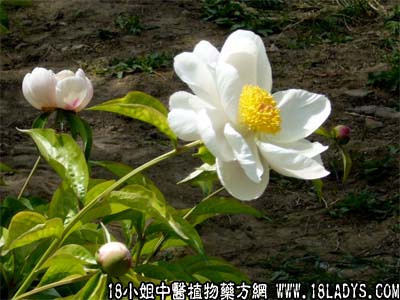

白芍药(中草药名称:芍药)(科目:毛茛科)

【中药概述】
白芍药为毛茛科草本植物芍药干燥根。苦、酸，微寒。归肝、脾经。
1．补血敛阴：用于血虚萎黄、眩晕、经少经闭、能和血、敛阴等，如（四物汤、桂枝汤）；用于敛阴止汗，阴虚盗汗证，常与牡蛎 龙骨 五味子等同用。
2．柔肝止痛：用于肝气不和之胁肋作痛，或肝气乘脾之脘腹疼痛，及手足拘挛作痛等，如（逍遥散、痛泻要方）、（<活法机要>芍药甘草汤）。
3．平降肝阴：用于肝阳主亢之头痛眩晕等证，常与生地，牛膝，代赭石等同用。
【药效鉴别】
白芍虽然补血力强，但亦为常用之品，又善和血、敛阴、柔肝缓急，具有良好疗效，一般均须炒用，生用则有平降肝阳之功。
【临证应用】
（<景岳全书>柴胡疏肝丸）。治肝气滞，胁肋疼痛，寒热往来。
【药理作用】
1.对中枢神经系统有抑制作用，有降体温、镇静、抗惊厥作用；
2.对平滑肌有松弛作用；
3.对冠动脉及血管有扩张作用；
4.对葡萄球菌、肺炎双球菌、痢疾杆菌、大肠杆菌、伤寒杆菌、变形杆菌等有抑制作用。
【化学成分】
含芍药甙，少量羟基芍药甙、芍药内酯甙、苯甲酰芍药甙等。
【用量用法】
8——15g，水煎服。
【使用注意】
阳虚寒盛之证不宜单独使用。大剂量可增加肝脏的解毒负担，故肝动不良者不宜多服。芍药反藜芦（诸参辛芍叛藜芦）。
【注】
其商品药材有杭白芍（产于杭州等地）、东白芍（产于浙江东阳等县），此二者品质最优，均奉为地道药材。此外还有亳白芍、川白芍、宝鸡白芍。
炒白芍：药性缓和，善于养血、敛阴，柔肝和脾止痛之功更佳。如（<景岳全书>柴胡疏肝散）。
酒白芍：减其寒性，缓其酸收，稍有活血之功。如（<金匮要略>温经汤）。